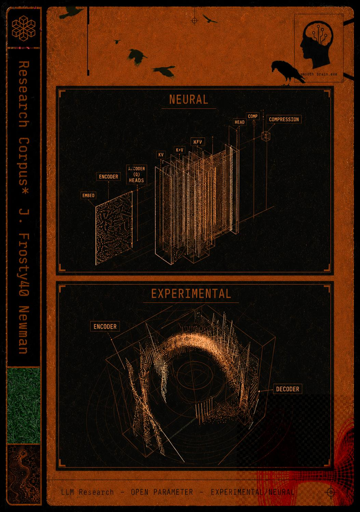

 TABLE OF CONTENTSCAMPAIGN
TABLE OF CONTENTSCAMPAIGN
READER CALIBRATION / RULES
Competition / task: OpenAI Parameter Golf: build a compressed language-model submission under contest constraints and minimize validation bits per byte.
Public competition context: the competition and pull requests were public OpenAI Parameter Golf PRs. Adapting to public SOTA, comparing against public submissions, and incorporating the best available techniques were part of the competition. All work included in this report is mine, built within that collaborative public field.
Track calibration: the experimental branch was the non-record unified transformer / recursion research lane. It contains architecture probes and recurrence ideas tested for insight; the neural branch is the competitive leaderboard-submission track.
BPB: bits per byte. Lower is better; this report separates BPB model scores from custom-kernel / FA3 timing ratios.
Valid submission: a BPB submission counts only when it follows the three-seed contest standard: artifact under the 16 MB cap, a 10-minute training run on 8xH100, a 10-minute maximum evaluation period on 8xH100, and no test-data leakage.
Invalid scores: BPB values below 1.06 are treated as TTT test-data leakage and excluded from valid competition comparisons.
Excluded / non-comparable: artifacts over 16 MB, runs outside the 8xH100 / 10-minute train / 10-minute eval / three-seed standard, crash rows, loader failures, and kernel ratio measurements are not counted as valid BPB submissions.
Best valid score: 1.0620 VAL_BPB.
Baseline: the tracked Naive Baseline reference was 1.2244 VAL_BPB; the best valid result is a 0.1624 BPB reduction, about 13.3% lower than that baseline.
Improvement: the strongest line was a hybrid neural submission using a larger 10k-vocabulary CaseOps tokenizer with looped GQA transformer mechanics, per-group compression, int7/int6 packaging, LQER, and phased LoRA TTT.
Evidence: all files and logs provided for review or reproduction.
SECTION 1.0 — PUBLICATION MAP
| LAYER | COUNT | FUNCTION | OPEN |
|---|---|---|---|
| ADDRESS TO THE READER | 1 | Stellae creationem esse donum divinum nostrum postulant. | open |
| TABLE OF CONTENTS | 1 | navigation, report calibration, and report reader | open |
| CATEGORY REPORTS | 3 | experimental, neural, and kernel drilldowns | open |
| WEEKLY REPORTS | 7 | 7-day daily-report rollups | open |
| DAILY REPORTS | 45 | one locked evidence page per campaign day | open |
SECTION 2.0 — REPORT INDEX
CATEGORY INDEX
| CATEGORY | ACTIVE DAYS | DATAPOINTS | WINDOWS | CHART PANELS | OPEN |
|---|---|---|---|---|---|
| EXPERIMENTAL | 33 | 33 | 4 / 4 | 4 | open |
| NEURAL | 22 | 22 | 4 / 4 | 4 | open |
| KERNEL | 9 | 9 | 2 / 4 | 2 | open |
WEEKLY REPORTS
| WEEK | DATES | DAYS | METRIC | CLASSIFICATION | OPEN |
|---|---|---|---|---|---|
| WEEK 01 | 2026-03-18 to 2026-03-24 | 7 (5 measured) | VAL_BPB | NEURAL 11 · EXPERIMENTAL 61 | open week |
| WEEK 02 | 2026-03-25 to 2026-03-31 | 7 (7 measured) | VAL_BPB | NEURAL 13 · EXPERIMENTAL 199 | open week |
| WEEK 03 | 2026-04-01 to 2026-04-07 | 7 (7 measured) | VAL_BPB | NEURAL 9 · EXPERIMENTAL 100 | open week |
| WEEK 04 | 2026-04-08 to 2026-04-14 | 7 (6 measured) | VAL_BPB | NEURAL 28 · EXPERIMENTAL 32 | open week |
| WEEK 05 | 2026-04-15 to 2026-04-21 | 7 (7 measured) | CUSTOM/FA3 FB RATIO | KERNEL 2866 · NEURAL 37 · EXPERIMENTAL 1 | open week |
| WEEK 06 | 2026-04-22 to 2026-04-28 | 7 (6 measured) | VAL_BPB | KERNEL 7 · NEURAL 12 · EXPERIMENTAL 184 | open week |
| WEEK 07 | 2026-04-29 to 2026-05-01 | 3 (3 measured) | VAL_BPB | KERNEL 2 · NEURAL 10 | open week |
DAILY REPORTS
DAILY REPORTS
| DAY | DATE | OPEN |
|---|---|---|
| DAY 001 · 2026-03-18 | 2026-03-18 | open day |
| DAY 002 · 2026-03-19 | 2026-03-19 | open day |
| DAY 003 · 2026-03-20 | 2026-03-20 | open day |
| DAY 004 · 2026-03-21 | 2026-03-21 | open day |
| DAY 005 · 2026-03-22 | 2026-03-22 | open day |
| DAY 006 · 2026-03-23 | 2026-03-23 | open day |
| DAY 007 · 2026-03-24 | 2026-03-24 | open day |
| DAY 008 · 2026-03-25 | 2026-03-25 | open day |
| DAY 009 · 2026-03-26 | 2026-03-26 | open day |
| DAY 010 · 2026-03-27 | 2026-03-27 | open day |
| DAY 011 · 2026-03-28 | 2026-03-28 | open day |
| DAY 012 · 2026-03-29 | 2026-03-29 | open day |
| DAY 013 · 2026-03-30 | 2026-03-30 | open day |
| DAY 014 · 2026-03-31 | 2026-03-31 | open day |
| DAY 015 · 2026-04-01 | 2026-04-01 | open day |
| DAY 016 · 2026-04-02 | 2026-04-02 | open day |
| DAY 017 · 2026-04-03 | 2026-04-03 | open day |
| DAY 018 · 2026-04-04 | 2026-04-04 | open day |
| DAY 019 · 2026-04-05 | 2026-04-05 | open day |
| DAY 020 · 2026-04-06 | 2026-04-06 | open day |
| DAY 021 · 2026-04-07 | 2026-04-07 | open day |
| DAY 022 · 2026-04-08 | 2026-04-08 | open day |
| DAY 023 · 2026-04-09 | 2026-04-09 | open day |
| DAY 024 · 2026-04-10 | 2026-04-10 | open day |
| DAY 025 · 2026-04-11 | 2026-04-11 | open day |
| DAY 026 · 2026-04-12 | 2026-04-12 | open day |
| DAY 027 · 2026-04-13 | 2026-04-13 | open day |
| DAY 028 · 2026-04-14 | 2026-04-14 | open day |
| DAY 029 · 2026-04-15 | 2026-04-15 | open day |
| DAY 030 · 2026-04-16 | 2026-04-16 | open day |
| DAY 031 · 2026-04-17 | 2026-04-17 | open day |
| DAY 032 · 2026-04-18 | 2026-04-18 | open day |
| DAY 033 · 2026-04-19 | 2026-04-19 | open day |
| DAY 034 · 2026-04-20 | 2026-04-20 | open day |
| DAY 035 · 2026-04-21 | 2026-04-21 | open day |
| DAY 036 · 2026-04-22 | 2026-04-22 | open day |
| DAY 037 · 2026-04-23 | 2026-04-23 | open day |
| DAY 038 · 2026-04-24 | 2026-04-24 | open day |
| DAY 039 · 2026-04-25 | 2026-04-25 | open day |
| DAY 040 · 2026-04-26 | 2026-04-26 | open day |
| DAY 041 · 2026-04-27 | 2026-04-27 | open day |
| DAY 042 · 2026-04-28 | 2026-04-28 | open day |
| DAY 043 · 2026-04-29 | 2026-04-29 | open day |
| DAY 044 · 2026-04-30 | 2026-04-30 | open day |
| DAY 045 · 2026-05-01 | 2026-05-01 | open day |